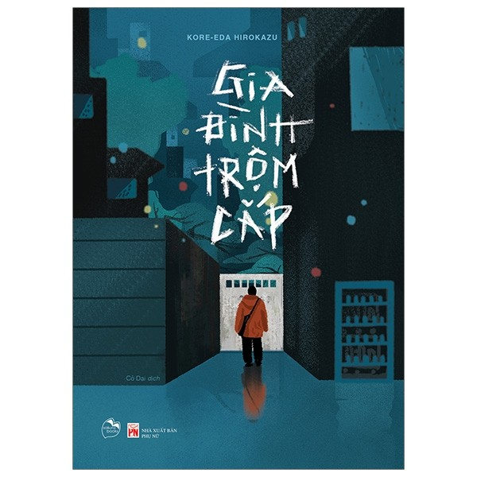

Tôi là sinh viên năm 3 ngành Công Nghệ Thông Tin của Trường Đại Học Sư Phạm Kỹ Thuật Thành Phố Hồ Chí Minh
Tôi yêu thích những chú chó, chúng vô cùng thông minh và trung thành. Chúng làm cuộc sống tôi vui vẻ hơn.
Âm nhạc là một phần không thể thiếu trong cuộc sống tôi. Tôi thích mọi thể loại nhạc, mỗi thể loại là một gia vị trong cuộc sống của tôi.

Tôi rất yêu thích đọc truyện tranh và sách. Một cuốn sách mà tôi yêu thích là "Gia đình trộm cắp" - một tác phẩm tuyệt vời về tình yêu, gia đình và cuộc sống.